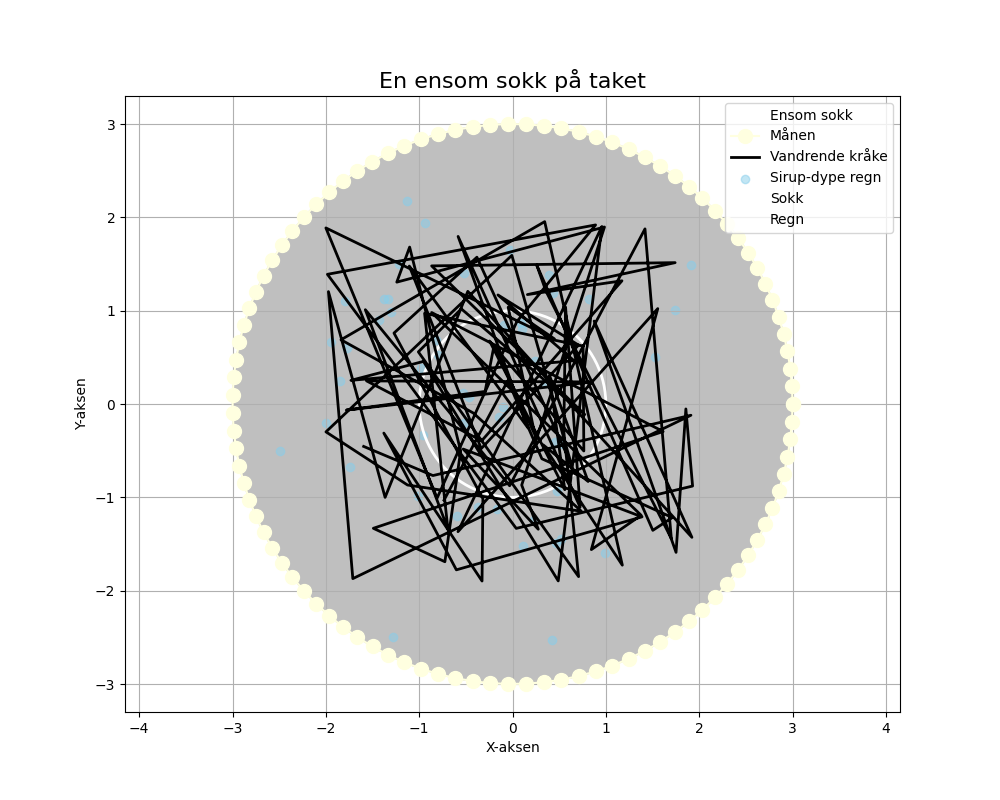

En ensom sokk på taket, hvor månen leker gjemsel, den vinker til en vandrende kråke, og drømmer om sirup‑dype regn.

import matplotlib.pyplot as plt
import numpy as np
# Dikt
dikt = """
En ensom sokk på taket,
hvor månen leker gjemsel,
den vinker til en vandrende kråke,
og drømmer om sirup‑dype regn.
"""
# Matematisk representasjon - Sokk på taket
# Bruker en spiral for å representere sokken, og en sirkel for taket
theta = np.linspace(0, 2 * np.pi, 100)
sokk_radius = 1
tak_radius = 3
sokk_x = sokk_radius * np.cos(theta)
sokk_y = sokk_radius * np.sin(theta)
# Månen
moon_radius = 0.5
moon_x = tak_radius * np.cos(theta)
moon_y = tak_radius * np.sin(theta)
# Kråken
krake_x = np.random.uniform(-2, 2, 100)
krake_y = np.random.uniform(-2, 2, 100)
# Sirup-regn (representert som en Gaussisk fordeling)
mean_regn = 0
std_regn = 1
regn_x = np.random.normal(mean_regn, std_regn, 50)
regn_y = np.random.normal(mean_regn, std_regn, 50)
# Plotting
fig, ax = plt.subplots(figsize=(10, 8))
# Tak
ax.add_patch(plt.Circle((0, 0), tak_radius, color='gray', alpha=0.5))
# Sokk
ax.plot(sokk_x, sokk_y, color='white', linewidth=2, label='Ensom sokk')
# Månen
ax.plot(moon_x, moon_y, color='lightyellow', marker='o', markersize=10, label='Månen')
# Kråken
ax.plot(krake_x, krake_y, color='black', linewidth=2, label='Vandrende kråke')
# Sirup-regn
ax.scatter(regn_x, regn_y, color='skyblue', alpha=0.5, label='Sirup-dype regn')
# Bruker en 3D-scatter plot for å visualisere regn og sokk
ax.scatter(sokk_x, sokk_y, np.zeros_like(sokk_x), color='white', alpha=0.5, label='Sokk')
ax.scatter(regn_x, regn_y, np.zeros_like(regn_x), color='skyblue', alpha=0.5, label='Regn')
# Tilpassing av plot
ax.set_title('En ensom sokk på taket', fontsize=16)
ax.set_xlabel('X-aksen')
ax.set_ylabel('Y-aksen')
ax.axis('equal')
ax.legend(loc='upper right')
ax.grid(True)
# Lagre figuren
plt.savefig(output_path)execution_ok=True fallback_used=False image_ok=True